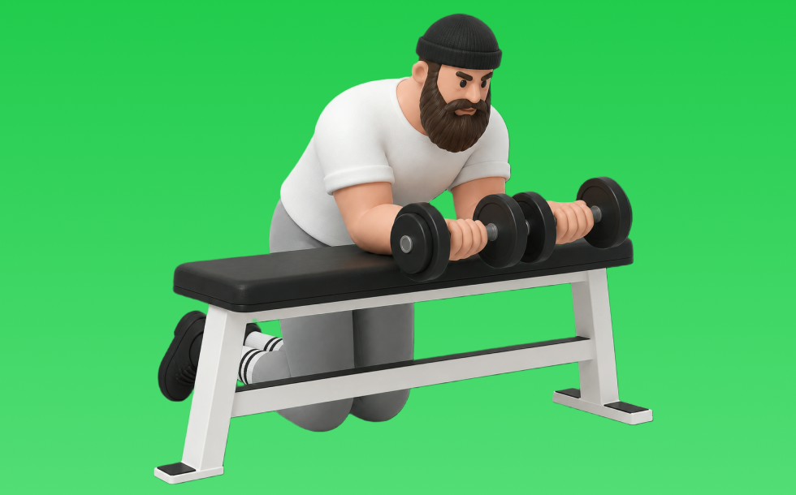

リストカール

リストカールとは、バーベルを使って「膝を曲げる」動作で前腕（前腕筋群）を鍛える種目です。高重量を扱いやすく、筋力を伸ばしやすいのが特徴で、かかとを引き寄せて収縮し、ゆっくり戻す動作を繰り返します。握力向上や前腕の発達が期待できます。
- 対象部位
- 腕
- 器具
- バーベル
- 記録形式
- 重量・回数
- 別名
- 手首カール
YouTube動画
-
【リストカール】手首を痛めず前腕に効かせるコツ〜重さ・回数・頻度まで解説！
-
【極太】前腕が成長しない人の共通点&その対策種目３選【筋トレ】
-
【初心者向け】ダンベルを使った前腕の筋トレ【5分間】
-
【前腕】リストカールを1ヶ月ほぼ毎日やった結果【筋トレ】
-
【リストカール】前腕トレを6ヶ月ほぼ毎日やった結果と感じた事【リバースリストカール】
-
【強靭な手首を造れ‼】ダンベルリストカール22.5㎏
-
前腕トレーニング日記！with 平川選手！効かせるリストカール！【腕相撲・アームレスリング】
-
10分でできる前腕を極太にする最強トレーニング！！
-
【筋トレ】太くたくましい腕になるリストカールの拮抗筋を鍛える為、バーベルリバースリストカールしてみた‼️
YouTubeショート
-
リストカール／前腕屈筋群／筋トレ実践講座
-
㊗️100万再生🎉とんでもねぇ前腕。
-
リストカール（バーベル使用）
-
前腕が太くなる魔法のルーティン
-
リストカール（Wrist Curl）のやり方とフォーム
-
プロが教える太い前腕の作り方【世界の筋肉】
-
リストカール
-
効果がないハンマーカール #筋トレ
-
ぶっとい前腕が欲しいならリストカールはやるな！？
-
【ダンベル】腕トレ４選 #筋肉
-
ビハインドバックリストカール（Behind Back Wrist Curl）のやり方とフォーム
-
握力を1ヶ月鍛えた前腕！ #shorts
-
前腕が超太くなった！自宅トレーニング！#shorts #筋トレ #fitness
-
やってみたくなる前腕トレ!!
-
前腕をバチボコに太くするトレーニング8選！#shorts
-
【今すぐやめろ】前腕が成長しなくなる握力トレやカール(科学的腕トレ) #shorts
-
前腕筋がこれで太くなる！#おすすめ #高校生 #ショート #ユーチューブ #筋トレ #筋肉 #shorts #shortvideo #youtubeshorts #motivation #gym
-
リストカール80kg 10reps
-
【前腕】手首や肘の安定を！リストカール #shorts
-
リストカール
-
こんなバーベルカールはやめろ！正しいフォーム解説 #筋トレ
-
ハンマーカールのやり方#初心者 #ジム #腕トレ
-
#筋力トレーニング#ダンベルカール30KG#気合いチャンネル【浜口京子】
-
前腕屈筋群を鍛える！リストカール(ダンベル･EZバー)【糸井トレーナー】
-
早く知りたかった腕トレ③ハンマーカール #shorts #筋トレ
-
腕のやり方🔥〜ケーブルプレスダウン基礎編〜 #筋トレ #筋肉 #筋肉社長 #腕トレ
-
【検証】握力が弱い人は必見？ #筋トレ
-
前腕伸筋群を鍛える！リバースリストカール(ダンベル･EZバー)【糸井トレーナー】
-
150kgのダンベルを扱える数少ない人類 【世界の筋肉】
-
【THAT'Sトレーニング】ビハインド・ザ・バックリストカール
-
マッチョってダンベル何キロまで持てる？#shorts #筋トレ #ダンベル何キロ持てる
動作方法
- 対象部位の力を抜かずに構える
- 反動を使わず、可動域を丁寧に使う
- 戻し動作をゆっくり行う
動作ポイント
- 可動域を急に狭めない
- 対象部位の緊張を保つ
ワンポイントアドバイス
- 肘の位置を固定すると狙った部位に効きやすい
- 回数を急がず、下ろし動作を丁寧に行う
目的別回数設定
目的や体力に応じた一般的な目安です。無理のない範囲で調整してください。
- 筋力アップ
- 1〜5回
- 筋肥大
- 6〜12回
- 持久力アップ
- 13〜20回
YouTube動画について
動画はYouTubeの公開情報をもとに表示しています。内容は投稿者によるもので、Biggrによる監修ではありません。
アプリを入手
筋トレやトレーニングの記録はBiggrにお任せください。今すぐ無料で使い始められます。